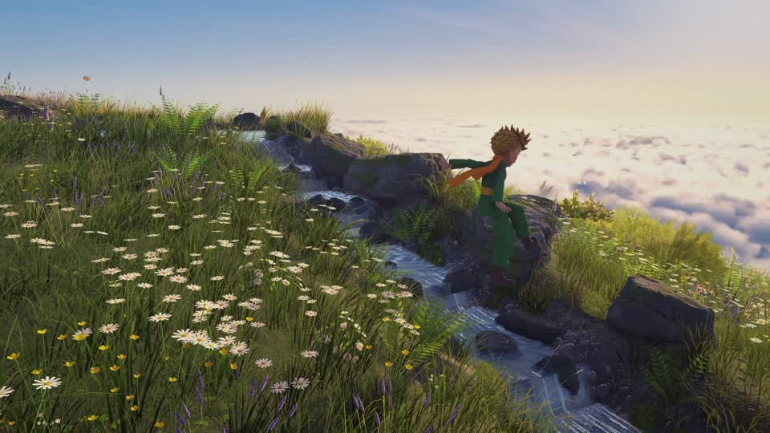
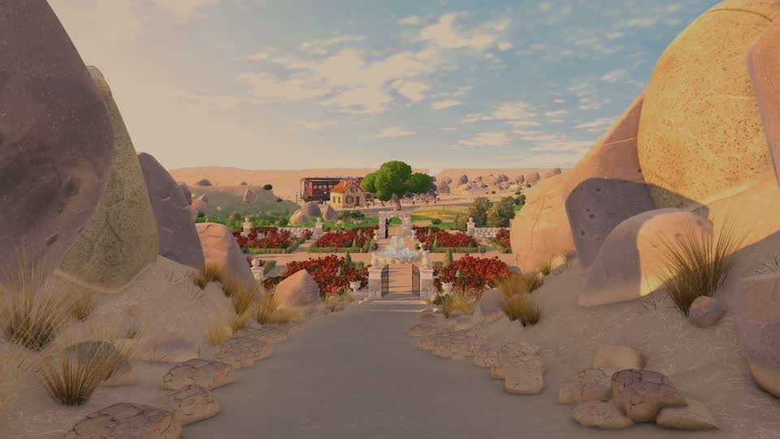
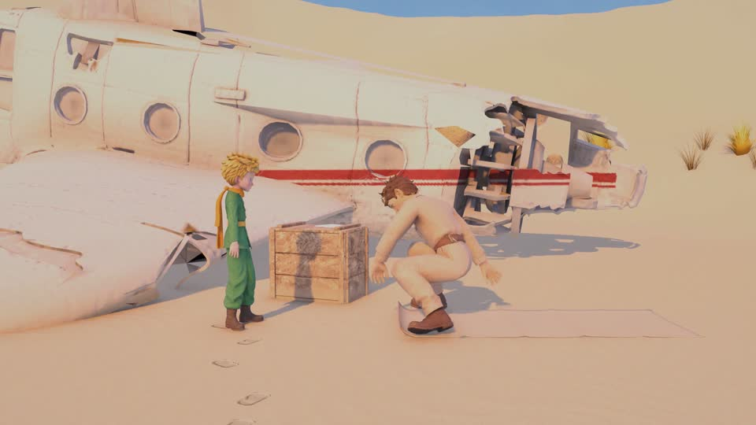
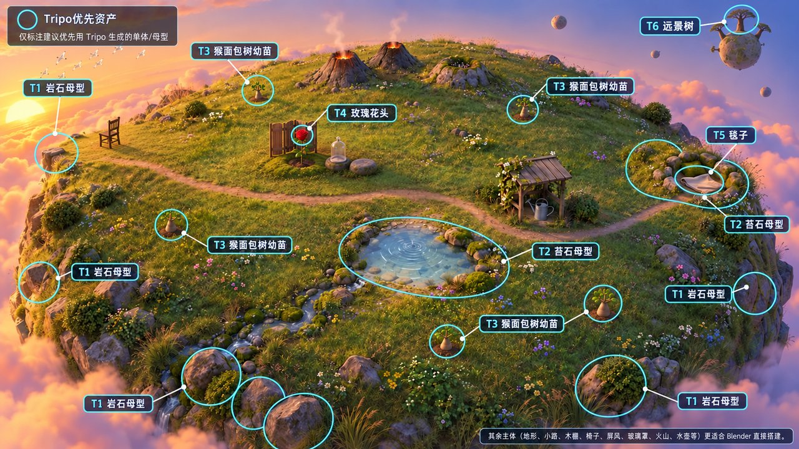
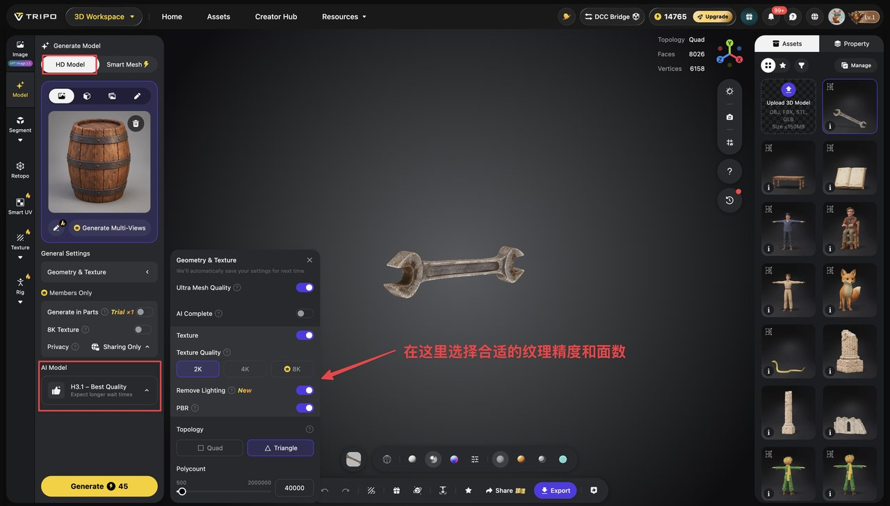
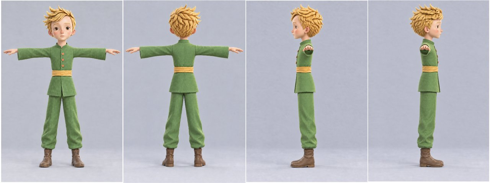
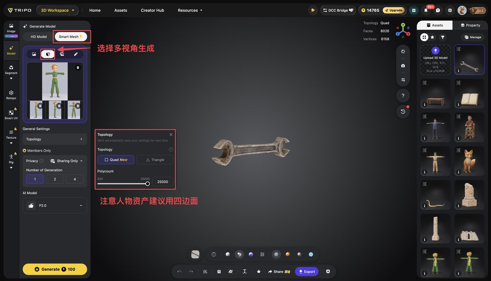
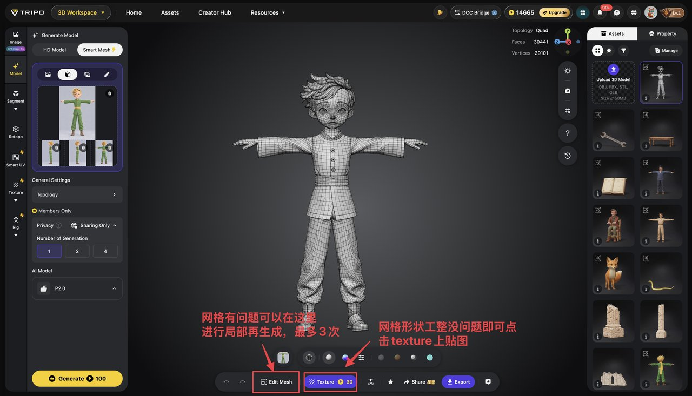
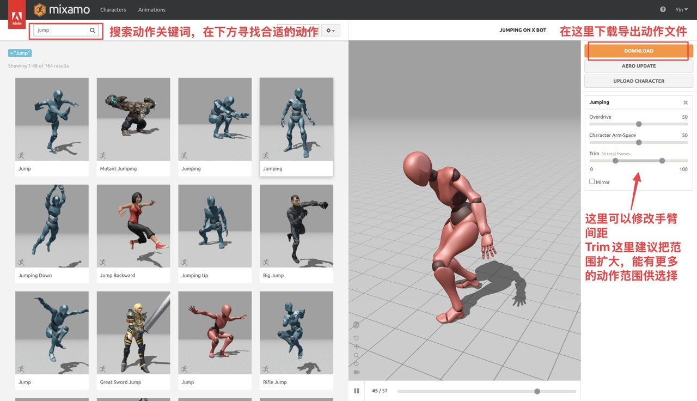
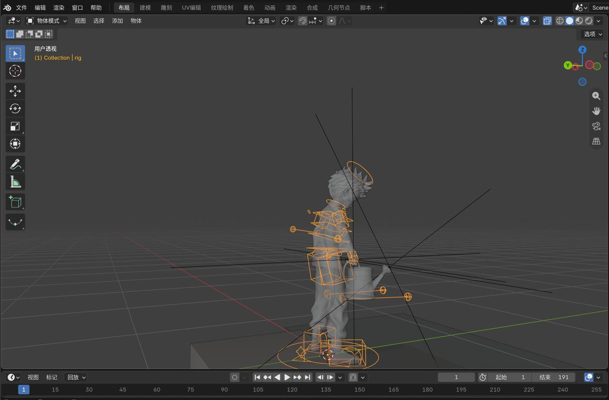

本周，我用 Opus 5.5 + Tripo + Blender，把《小王子》中的星际旅行做成了一款可以亲自探索的 3D 游戏。发布后，全网累计收获近 300w 浏览。



很多朋友都非常喜欢这个游戏。而从场景搭建、人物制作，到代码开发和调试，背后的主要制作工作，都交给了 AI 完成。
于是，我决定把这次的制作流程公开出来，结合实际案例和可参考的提示词，手把手带大家入门 AI 3D 游戏制作，让你也能开始搭建自己想象中的世界。
本篇文章主要分为三个部分：
1、游戏开发流程和制作准备
2、场景构建
3、角色构建
1、游戏开发流程和制作准备
游戏开发流程： Fable 5.1 负责 PRD 的制作，梳理游戏核心场景、人物以及剧情故事线 + Image 2.5 生成场景和人物图片 + Tripo 生成核心 3D 资产 + Opus 5.5 搭建核心代码 + Astra 迭代优化以及 bug 修复
游戏工具配置：
- Blender: 下载Blender CLI，用于优化tripo生成的3D模型并完成游戏整体的3D建模；安装付费Auto-Rig pro插件，用于人物的绑骨蒙皮，方便动作交互制作
- Unity：安装Unity App（https://unity.com/），作为游戏引擎将场景、人物、交互动效打包成完整游戏；安装 Unity CLI，并在项目中装 Pipeline 包，让 Claude 通过官方 Unity MCP 直接操作 Unity 项目
接下来，这篇文章将着重讲解场景构建和人物制作。
2、场景构建
简单来说：Image 2.5 生成场景图 — 拆解 3D 资产并在 Tripo 中生成 — Opus 5.5 操作 Blender+Unity 进行场景建模
详细步骤如下👇：
(1) 使用 GPT Image 2.5 生成场景参考图，把想法变成明确的画面
根据前面整理的游戏需求，使用 Image 2.5 生成场景参考图，确定整体画风、配色，以及主要物体的位置。
建议先确定一张满意的场景效果图，再围绕它补充其他角度（特别是对于有室内和室外的场景）。其中，俯视图主要用来说明场景布局，斜侧视图用来补充物体的高度、造型和层次关系，当然也可以直接生成一张如下的整体视图：
可复用参考提示词：
基于上传的场景参考图，帮我生成一张该场景的全面貌参考图片，包括整体环境的多视角视图以及局部细节的展示。
(2) 让 AI 拆解场景资产，筛选出需要在 Tripo 中单独生成的模型
有了参考图之后，可以直接使用 AI 判断场景中哪些资产需要在 Tripo 中单独生成，哪些可以交给 Opus 5.5 在 Blender/Unity 中搭建。
参考提示词
我现在要进行游戏开发，我的技术栈是 Tripo + Blender + Unity。你根据我们上述生成的场景参考图，帮我去深入分析哪些资产适合用Tripo 生成，而哪些资产适合用 Blender 直接进行搭建。 将需要Tripo生成的资产在图片中标注出来，方便我来确认。

而对于Tripo里场景道具3D资产的制作，建议使用H3.1模型，其能保证资产的高精度细节。

(3) 通过专业的提示词让 Opus 5.5 操控 Blender、Unity 开始建模，建模的关键是给予详细的参考图以及多机位的进行迭代
在 Tripo 中生成并导出需要单独制作的 3D 道具后，将这些资产和第一步的场景参考图交给 Opus 5.5，让它操控 Blender + Unity 搭建整体环境，并按参考图摆放道具、调整比例和位置。
完成后，从正面、侧面等不同角度检查场景，结合截图反馈逐步调整布局与细节。
参考提示词如下：
根据上传的场景内外景多视角参考图以及生成好的Tripo 3D资产，你来对照参考图进行完美级的复刻。要求实现和参考图一样的惊艳质感和细节还原。 在实现完成后，派一个独立的审查 agent进行进行多机位的场景盲审。如果发现有和参考图差异的地方，就不断地进行迭代完善。
3、人物建模
Image 2.5生成人物图 — Tripo 中生成人物 3D 模型 — Blender的Auto-Rig pro插件进行绑骨蒙皮 — mixamo 动作接入 — 复杂交互在blender里进行二次调整（可选）
这里我们以小王子的设计为例来做具体讲解
(1) 使用Image 2.5生成人物的多视角参考图
根据人物形象和设定，首先使用Image 2.5生成小王子的 T-pose 四视图，并确保各视角的人物细节统一。

(2) 使用 Tripo 的 Smart Mesh P2.0 模型生成 3D 人物资产
Smart Mesh P2.0 是一个专门面向游戏和交互内容的 3D 生成模型，其特点是能生成面数可控、便于编辑的人物结构，方便后期的绑骨和动画制作
我们在Tripo当中选择「多视图生成3D」并依次上传四视图，拓扑默认四边形，精度可拉到最高，选择P2.0模型并开始生成

之后若发现初步生成的白模网格整齐无误，就可以点击「Texture（纹理）」生成模型贴图；若网格形状不合理，则可以选择「edit mesh」进行局部再生成

(3) 在Blender里利用Auto-Rig pro插件对人物进行自动绑骨和蒙皮
配置好该插件后，直接在Claude上传人物模型，并输入下面这个经过我反复调试总结出的提示词进行高效绑骨与蒙皮👇：
使用 Auto-Rig Pro 为人物完成绑骨和蒙皮，确保骨骼位置与人物关节对齐。完成后测试抬手、弯腿、转身等基础动作，检查并修正明显的变形、拉扯和穿模问题。
(4) 去mixamo下载人物需要的动作文件，并让Opus 5.5适配到对应的人物骨骼
根据游戏设定，去mixamo（https://www.mixamo.com/）按照关键词搜索小王子需要的动作，并下载对应的FBX动作文件

之后我们便可以让Opus检查相关动作是否匹配小王子的真实骨骼，并完成接入
(5) 在Blender中调整特殊动作与接触细节（复杂交互动作需要）
对于「小王子提水壶」这类涉及人物与道具接触的复杂交互，往往mixamo并没有完美适配的动作。我们可以先选一个接近的基础动作，再让Opus 5.5在blender里反复进行细节的迭代调整

提示词参考如下：
请参考提供的 Mixamo 动作，保留其中适用的部分，并使用 Auto-Rig Pro 的手臂 IK 控制器调整手臂姿势，配合手指握持和水壶位置的细节修正，补全提水壶动作。确保手掌与把手接触稳定、提起过程自然，避免穿模、握持脱离或水壶悬空。
下周我将在GitHub中开源游戏的全部代码以及更加完整的制作细节，欢迎大家持续关注！
ps. 大家如果也想要尝试用Tripo进行自己的3D创作，可以走我的链接注册，可以免费获得500 credits： https://studio.tripo3d.ai/home?invite_code=H2DB1X&utm_source=X&utm_medium=kol&utm_campaign=kol_Saccc
作者在评论区的补充
- “后面我会开源到 github仓库，大家可以自己下载到本地玩，也会讲解制作流程……”
- 回复网友：“下周开源 github 仓库 这样可以实时更新”